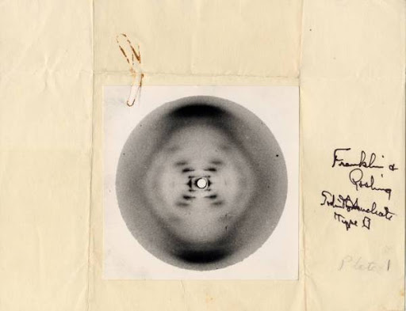
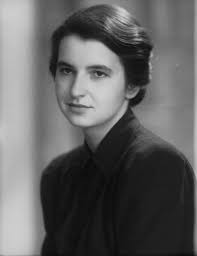
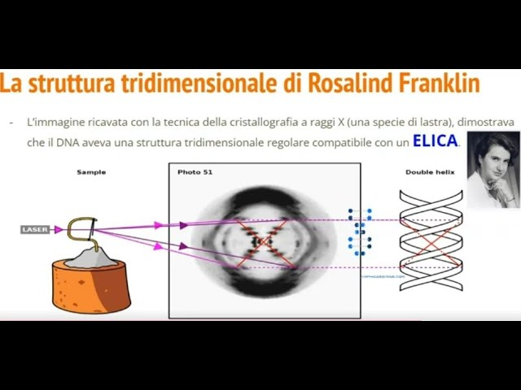

È impossibile non conoscere i nomi di James Watson e Francis Crick, due dei più famosi scienziati al mondo e vincitori del Premio Nobel insieme a Maurice Wilkins. La loro intuizione decisiva arrivò quando Watson osservò una fotografia a raggi X del DNA realizzata nel laboratorio di Rosalind Franklin al King’s College di Londra. Questa immagine, la celebre “Foto 51”, fu condivisa senza che lei ne fosse a conoscenza.
Per molto tempo Franklin è stata sottovalutata dalla storia ufficiale, nonostante il suo contributo fondamentale alla comprensione del DNA. Il suo lavoro di cristallografia a raggi X fu decisivo per confermare la struttura a doppia elica.
Oggi studi moderni dimostrano che la scoperta del DNA fu un lavoro collettivo che coinvolse Watson, Crick, Wilkins, Franklin e Gosling.


